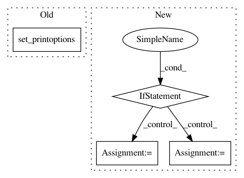

abf37e5b9a3e46d2c9e07e32ee947b4b74e64057,examples/temp_do_not_use_lscp.py,,,#,66
Before Change
timestamp = today.strftime("%Y%m%d_%H%M%S")
// set numpy parameters
np.set_printoptions(suppress=True, precision=4)
// TODO: Clean up unnecessary residual comments
// TODO: Add proper documentation
After Change
return iter(self.estimator_list)
if __name__ == "__main__":
from pyod.models.lof import LOF
import scipy.io as scio
from sklearn.model_selection import train_test_split
from sklearn.metrics import roc_auc_score
def loaddata(filename):
load data
:param filename:
:return:
mat = scio.loadmat(filename + ".mat")
X_orig = mat["X"]
y_orig = mat["y"].ravel()
return X_orig, y_orig
X, y = loaddata(r"C:\Users\znasrullah001\Documents\project-files\PyOD\LSCP\datasets\cardio")
random_state = np.random.RandomState(0)
el = []
k_list = random_state.randint(5, 200, size=50).tolist()
for k in k_list:
el.append(LOF(k))
// create the model
lscp = LSCP(el, random_state=random_state, local_region_size=100)
// split the data into training and testing
X_train, X_test, y_train, y_test = train_test_split(X, y, test_size=0.4, random_state=random_state)
X_train, X_test = standardizer(X_train, X_test)
// fit and predict
lscp.fit(X_train)
scores = lscp.decision_function(X_test)
print(roc_auc_score(y_test, scores))
In pattern: SUPERPATTERN
Frequency: 3
Non-data size: 4
Instances
Project Name: yzhao062/pyod
Commit Name: abf37e5b9a3e46d2c9e07e32ee947b4b74e64057
Time: 2018-12-01
Author: zain.nasrullah@ca.pwc.com
File Name: examples/temp_do_not_use_lscp.py
Class Name:
Method Name:
Project Name: SheffieldML/GPy
Commit Name: 7ecaf92acef0938800bfe4bd8df1b576da6013a2
Time: 2016-03-15
Author: alex.grigorievskiy@gmail.com
File Name: GPy/models/state_space_model.py
Class Name: StateSpace
Method Name: parameters_changed
Project Name: brian-team/brian2
Commit Name: a1a0d2e3010f8ade39317709a684bd431d5eef3c
Time: 2014-10-02
Author: marcel.stimberg@ens.fr
File Name: brian2/units/fundamentalunits.py
Class Name: Quantity
Method Name: in_unit